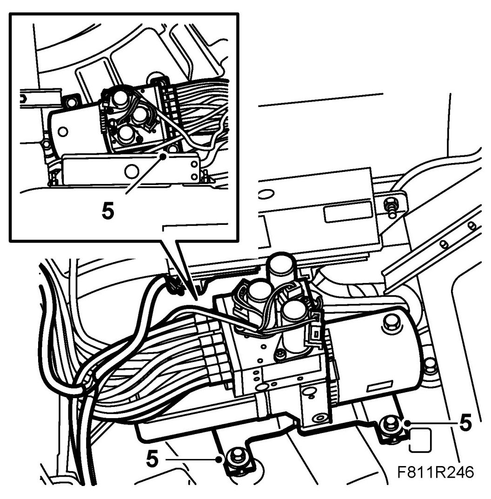
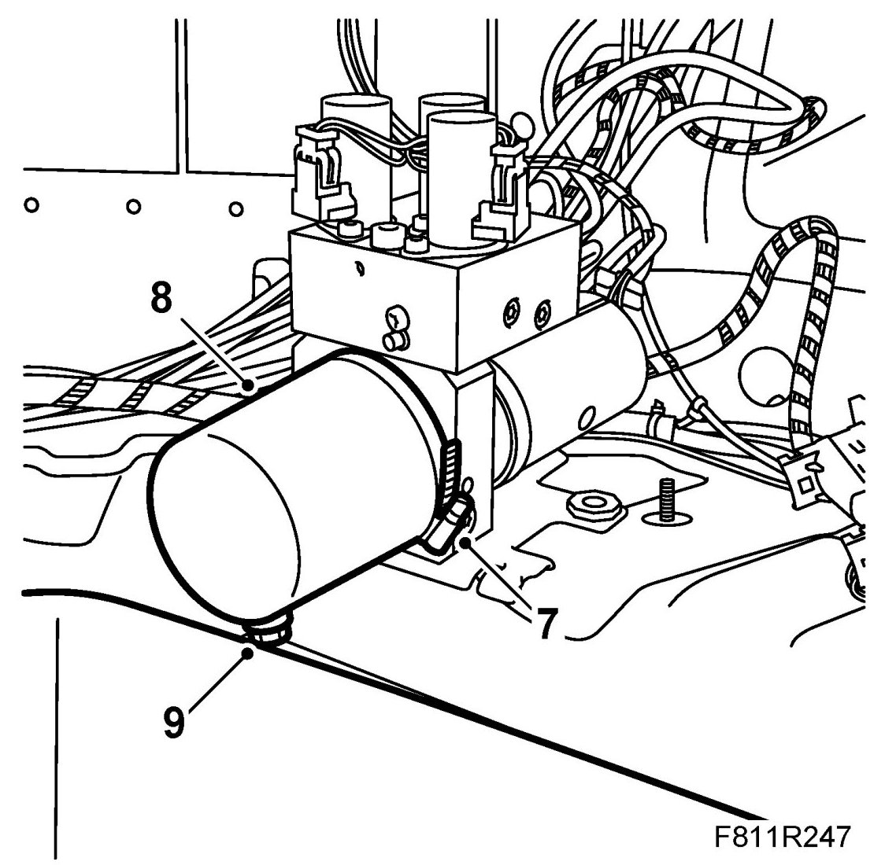
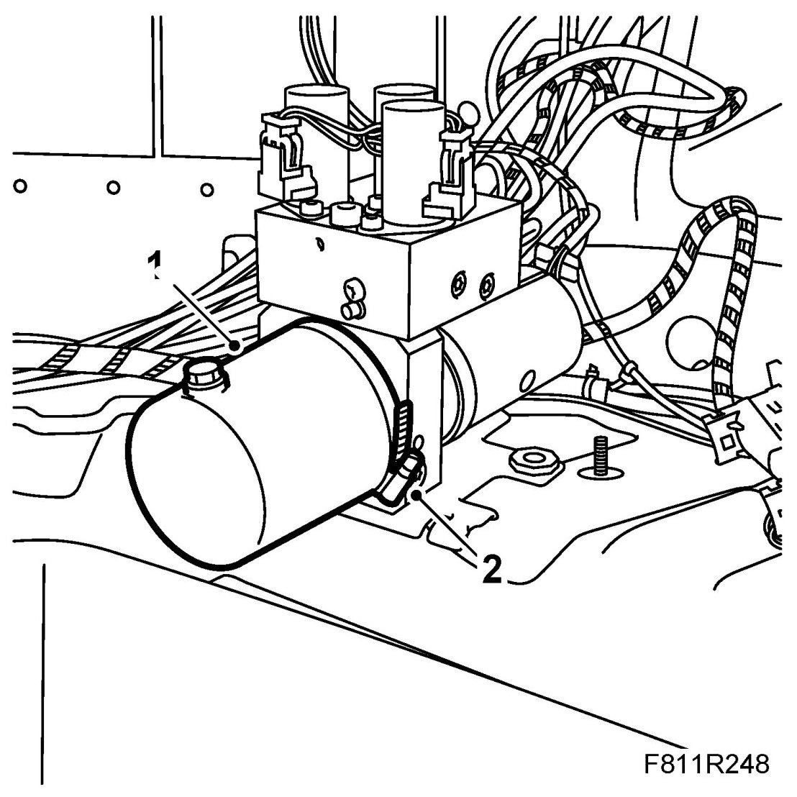
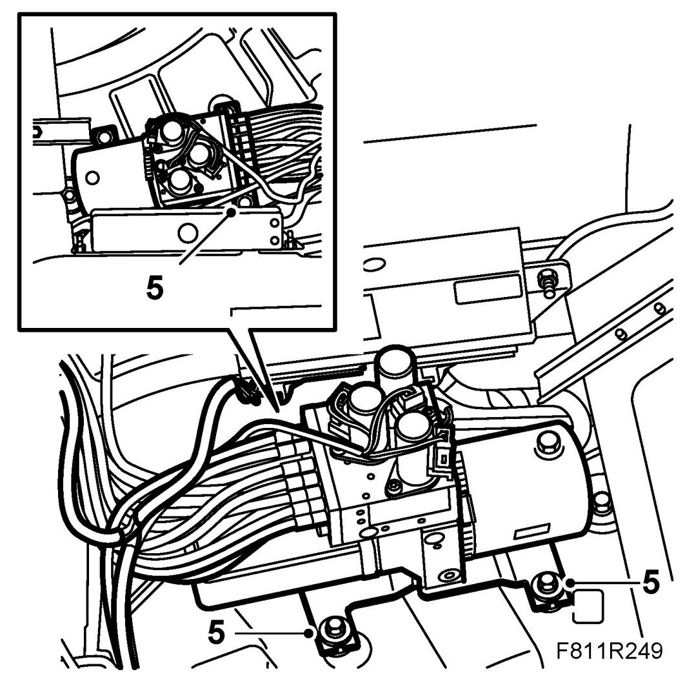

Draining, Filling and Bleeding the Hydraulic System
Draining, Filling And Bleeding The Hydraulic System
Draining the hydraulic system
1. Close the soft top completely.
2. Remove the Luggage compartment side trim, CV on the right-hand side.
3. Take the spare wheel out of the luggage compartment. Place an oil receptacle in the space for the spare wheel.
4. Loosen the fluid filler plug on the hydraulic unit fluid reservoir.

5. Unscrew the hydraulic unit retaining nuts.
6. Lift out the hydraulic unit somewhat so that the fluid reservoir is above the fluid receptacle.
IMPORTANT: Lift up the hydraulic unit carefully so that the hydraulic hoses are not damaged.
7. Undo the hose clamp for the fluid reservoir on the hydraulic unit.

8. Turn the hydraulic unit fluid reservoir so that the oil filler plug is at the bottom.
9. Remove the fluid filler plug on the hydraulic unit fluid reservoir. Allow the fluid to run down into the receptacle.
10. Unlock the sixth bow using the emergency operation tool.
11. Use the emergency operating tool to open the first bow latch four or five times. Fluid will now be pumped back to the hydraulic unit.
12. Open and close the soft top manually four or five times. Fluid will now be pumped back to the hydraulic unit.
13. Open and close the soft top cover manually four or five times. Fluid will now be pumped back to the hydraulic unit.
Filling and bleeding the hydraulic system
1. Turn the hydraulic unit fluid reservoir so that the oil filler plug is up.

2. Fit the fluid reservoir hose clamp.
3. Place the hydraulic unit in mounting position. Fit the hydraulic unit nuts.

4. Fill the reservoir to MAX with fluid.
See Checking/filling oil.
Use 89 96 860 Power steering fluid.
IMPORTANT: Never use the same fluid as in the Saab 900 Cabriolet -M94
5. Open and close the soft top manually four or five times.
IMPORTANT: Check the oil level at regular intervals. Top up with oil as necessary.
6. Use the emergency operating tool to open the first bow latch four or five times.
7. Open and close the soft top cover manually four or five times.
8. Open and close the soft top automatically 5 times to fully bleed the system and check its function.
9. Check for any fluid leaks.
10. Check the oil level and top up as necessary. See Checking/filling oil.
11. Connect the diagnostics tool and erase any diagnostic trouble code.
12. Replace the spare wheel and fasten it.
13. Fit Luggage compartment side trim, CV.